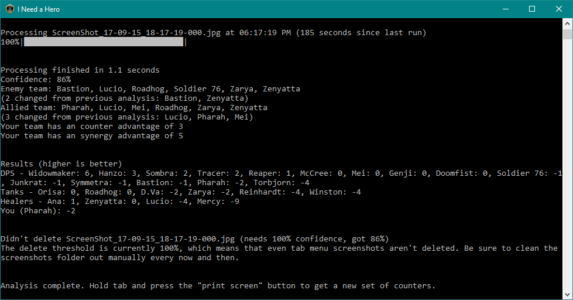

Uses image recognition, based on an automatically loaded screenshot, to suggest the best (and worst) heroes for you and your team to play.

Features:
Download: https://github.com/Kataiser/I-Need-a-Hero/releases
Installation and running instructions: Unzip anywhere. To run, double click "I Need a Hero", move the window to a second monitor (if you have one), then hold tab and press the "print screen" button once in game. Only works properly once the enemies are actually displayed.
NOTE: it auto deletes screenshots it deems to be of the tab menu, so keep that in mind. If this bothers you, change "delete_thresehold" in inah-settings.ini to 100.
Trello board: https://trello.com/b/7pb5hLHX
Sentry.io: https://sentry.io/kataiser/i-need-a-hero/
Uses:
All character names and portraits used are property of Blizzard Entertainment Inc. This program is not associated with nor endorsed by Blizzard Entertainment.